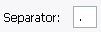

Możesz pobrać informacje o czasie i dacie z elementów zamiast ustawiać swoje własne.
Pozostałe formatowanie będzie nadal działało.
Uwaga: W systemach plików POSIX (Linux, OS X, BSD, etc.) nie występuje czas utworzenia ponieważ nie istnieje on w tych systemach. Zamiast tego zobaczysz Zmiana metadanych (ctime), który jest czasem ostatniej zmiany (nie koniecznie modyfikacji - np. zmiana uprawnień spowoduje zmianę metadanych ale nie modyfikację)
Użyj Kalendarza by określić swoją datę (domyślnie data bieżąca).
To są wszystkie dostępne wbudowane formaty daty. Jakkolwiek możesz również użyć własnych formatów po prostu wpisując tekst w pole tekstowe.

Użyj Separator by określić jak oddzielać pola daty podczas używania wbudowanych formatów daty.
Domyślnie w polu Czas wyświetlany jest czas włączenia programu. Można to zmienić podświetlając wybrane pole i używając strzałek w górę lub w dół.
Przycisk Ustaw na teraz wstawia czas bieżący.
To są wszystkie dostępne wbudowane formaty czasu. Jakkolwiek możesz również użyć własnych formatów po prostu wpisując tekst w pole tekstowe.
Użyj Separator by określić jak oddzielać pola czasu podczas używania wbudowanych formatów czasu.